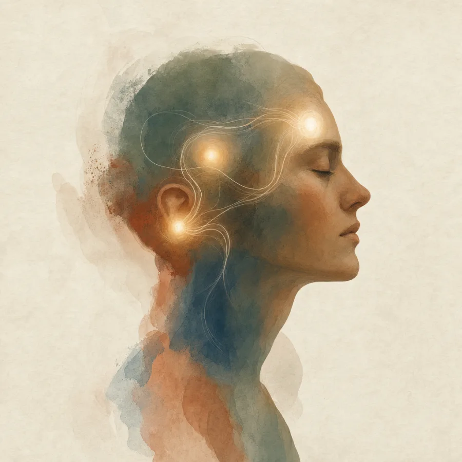

Inside theExam Room
The neuroscience of MCAT performance — and how to run your own brain chemistry when the pressure hits.
Three regions decide every answer.
Every multiple-choice outcome is a negotiation between three brain regions. Know what each one does — and what fails under pressure — and you hold a physiological edge most candidates don't.

The seat of executive function — calm, systematic, in full control of the courtroom.
- Working memory — holding the question stem, all four options, and the relevant knowledge simultaneously in awareness
- Inhibitory control — actively suppressing attractive but incorrect distractors
- Systematic reasoning — weighing options against each other, not reacting to what feels familiar
- Strategic regulation — deciding when to commit, when to flag and move on, how to pace
Dense pyramidal networks in layers III & V of the dorsolateral PFC, tuned by dopamine (D1) and norepinephrine — at optimal catecholamine levels these circuits hold stable, robust firing.
Your retrieval engine for the declarative knowledge you spent months encoding.
- CA3 pattern completion — reconstructing a full memory from a partial cue (a stem triggering a whole concept)
- CA1 output neurons — transferring retrieved information into working memory for conscious use
- Entorhinal integration — weaving in the contextual cues that locate the right memory
The witness freezes mid-testimony not because they don't know the answer, but because the room descended into chaos before they could speak.
Your threat-detection and emotional-salience system — useful in the right dose, dangerous with a hair trigger.
- Maintains arousal & vigilance across a long exam
- Flags questions that deserve extra attention
- Supplied motivational drive during study, through emotional memory tagging
The bailiff pulls the fire alarm. Cortisol and adrenaline flood the room like toxic smoke — the judge can't see, the witness loses the notes, and the wrong answers suddenly look like the most convincing witnesses present.
False familiarity.
Multiple choice is neurologically unique: the wrong answers are engineered to exploit exactly what stress does to your brain.
The hippocampus defaults to familiarity-based recognition over accurate recall — a wrong answer in familiar terminology fires a false "I know this" signal.
The PFC loses the inhibitory control needed to override that false signal.
The amygdala itself reinforces emotionally familiar options regardless of their accuracy.
A calm, well-functioning PFC sees through these coached witnesses immediately. A stressed PFC defers to whoever sounds most confident. Anxiety doesn't just make you feel bad — it actively manufactures wrong answers from a brain that knows the right ones.
- Delegates to whichever option feels familiar
- Reacts to recognition instead of reasoning
- Drops items from working memory
- The bailiff runs the courtroom
- Sees through coached distractors
- Weighs options systematically
- Holds all four options online
- The judge holds the gavel
What you want each region to do.
Three small job descriptions. If every region stays in role, the right answer reaches the verdict.
Prefrontal cortex
The JudgeHippocampus
The Expert WitnessAmygdala
The BailiffThe ventilation switch.
You will feel it — the surge, the tightening in the chest, the room getting louder. The bailiff pulled the alarm. Here is the critical thing to understand: you have a switch. It is always accessible. It takes less than thirty seconds.
The physiological sigh
Fastest-acting. A double inhale through the nose — a full breath, then a short sniff on top — followed by a long, slow exhale through the mouth.
Box breathing
Sustained reset. Inhale 4 · hold 4 · exhale 4 · hold 4 — the protocol high-performance operators use to make accurate decisions under acute physiological stress.
Cognitive reappraisal
The most powerful PFC tool you own. Deliberately reframe the feeling — threat becomes challenge, without losing the useful arousal.
This arousal is my brain preparing me to perform.This is challenge, not threat.
The smoke clears — without turning off the lights.
You have built the case. Now let the judge hear it.
Order in the room.
When everything works as it should: the bailiff is present but seated, the expert witness is relaxed and freely testifying, and the judge is calm, systematic, and delivering sound verdicts — the wrong answers exposed as the coached witnesses they are. When the alarm goes off — and it will, at least once — you now know exactly what is happening physiologically, and you can hit the ventilation switch and restore order inside half a minute.